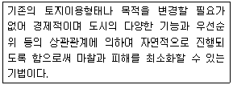
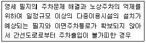
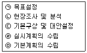
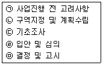
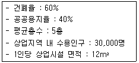

도시계획기사 (2008-03-02 기출문제)
1과목: 도시계획론
1. 다음 중 우리나라 현재 도시계획의 종류와 위계를 맞게 나열한 것은?
- 광역도시계획 - 도시기본계획 - 도시관리계획 - 지구단위계획
- 수도권계획 - 도시기본계획 - 도시설계
- 도시기본계획 - 광역도시계획 - 도시재정비 - 지구단위계획
- 광역도시계획 - 수도권정비계획 - 도시관리계획 - 도시기본계획 - 도시설계
(정답률: 알수없음)

2. 지역경제의 모형 중에서 '지역에서 생산된 제품에 대한 지역외부의 수요가 지역의 경제성장을 결정한다.'는 개념 위에 수립된 모형은 무엇인가?
- 수출기반모형
- 지역투입산출모형
- 신고전적 지역성장모형
- 변이할당모형
(정답률: 알수없음)
3. 도시성장관리정책의 목적으로 알맞지 않은 것은?
- 어반 스프롤(Urban Sprawl)의 방지
- 세수의 증대
- 효율적인 도시형태의 구축
- 경제적 효율성 제고
(정답률: 알수없음)
4. 2000년 50만 명이었던 어느 도시의 인구가 20⑤년에 58만 명으로 증가되었다. 등차급수방법에 의한 5년 동안의 연평균 인구증가율과 2010년의 추정 인구는?
- 2.8%, 62만명
- 2.8%, 64만명
- 3.2%, 66만명
- 3.2%, 68만명
(정답률: 알수없음)
5. 교통 수요추정에서 전통적으로 가장 많이 사용되는 4단계 수요추정법을 순서대로 올바르게 나타낸 것은?
- 통행발생 - 교통수단선택 - 통행배분 - 노선배정
- 통행발생 - 통행배분 - 교통수단선택 - 노선배정
- 통행배분 - 교통수단선택 - 통행발생 - 노선배정
- 통행배분 - 통행발생 - 교통수단선택 - 노선배정
(정답률: 알수없음)
6. 기반시설 설치가 어려운 기존 시가지에서 기존의 시설을 수용할 수 있는 범위 내에서 개발을 허가하는 제도를 무엇이라고 하는가?
- 개발밀도관리구역제도
- 개발관리구역제도
- 시가화조정구역제도
- 성장억제구역제도
(정답률: 알수없음)
7. 용도지역지구제에 대한 설명 중 옳지 않은 것은?
- 일종의 토지이용규제 수단이다.
- 토지의 경제적·효율적 이용과 공공복리증진을 도모하기 위하여 지정한다.
- 용도지역은 도시계획구역 전체를 대상으로 지정하며 동일한 위치에 중복하여 지정할 수 있다.
- 국토의계획및이용에관한법률에서는 용도지역, 용도지구, 용도구역을 두고 있다.
(정답률: 알수없음)
8. 지구단위계획에 대한 설명으로 틀린 것은?
- 지구단위계획은 도시계획수립 대상지역 일부에 대하여 체계적이고 계획적으로 관리하기 위하여 수립되는 도시관리계획이다.
- 지구단위계획은 입체적 계획이라고 할 수 있다.
- 지구단위계획은 계획내용에 맞게 건축행위를 유도하는 적극적 계획이다.
- 지구단위계획에서는 필지나 획지별로 차등을 두지 않고 전체적으로 건축행위를 제한한다.
(정답률: 알수없음)
9. 다음 중 '점' 자료에 대한 GIS 공간분석 기능이 아닌 것은?
- 공간적 질의(Spatial Query)
- 버퍼링(Buffering)
- 지리적 처리(Geocoding)
- 근린성 분석(Proximal Analysis)
(정답률: 알수없음)
10. 다음에 설명된 도시재개발의 수법에 해당하는 것은?

- 지구재개발
- 지구보전
- 지구순환재개발
- 지구수복
(정답률: 알수없음)
11. 다음 중 베버(M. Weber)의 도시에 대한 정의로 맞는 것은?
- 지적 엘리트를 포함한 각종 비농업적 전문가가 많으며 상당한 규모의 인구와 인구밀도를 갖는 공동체
- 주민의 대부분이 공업적 또는 상업적인 영리수입에 의해 생활하고 정주하는 곳
- 농촌에 비해 전문적인 직업의 종사자가 많고 인공환경이 우월하며 인구구성의 이질성이 강한 곳
- 도시의 결정요인은 예술·문화·종교·민주적인 정치형태이며, 평등한 시민이 활기에 차 있는 곳
(정답률: 알수없음)
12. 공간계획은 크게 국토계획, 지역계획, 도시계획, 단지계획 및 개별 건축계획 등으로 구분할 수 있다. 이러한 구분의 기준은 무엇인가?
- 계획의 시간적 차이
- 경제적 수준과 범위
- 공간적 범위
- 대상구역의 토지이용상태
(정답률: 알수없음)
13. 다음 중 케빈 린치(Kevin Lynch)가 분류한 도시 이미지를 구성하는 5가지 요소는?
- 도로(Path) · 건축물(Building) · 광장(Plaza) · 공원(Park) · 지구(District)
- 도로(Path) · 하천(River) · 공원(Park) · 중심지구(CBD) · 건축물(Building)
- 경계(Edge) · 랜드마크(Landmark) · 결절점(Node) · 도로(Path) · 지구(District)
- 경계(Edge) · 하천(River) · 랜드마크(Landmark) · 결절점(Node) · 중심지구(CBD)
(정답률: 알수없음)
14. 다음 중 방사환상형 도로망 형태에 대한 설명으로 틀린 것은?
- 인구 10만 이상의 신도시 계획에 적합
- 횡적인 연결은 환상선 연결
- 도심부와 교외 및 외곽은 방사선으로 연결
- 도쿄, 파리가 대표적인 방사환상형 도시
(정답률: 알수없음)
15. 도시계획가가 지리 및 공간자료를 바탕으로 수행할 수 있는 주요 활동은 흔히 '4M'으로 나타낼 수 있다. 다음 중 '4M'에 해당하지 않는 것은?
- 측정(Measurement)
- 도면화(Mapping)
- 입체화(Massing)
- 모형화(Modeling)
(정답률: 알수없음)
16. 다음 중 공동구의 장점에 해당하지 않는 것은?
- 빈번한 노면굴착에 의한 교통장애를 제거할 수 있다.
- 노상공작물의 철거로 노면의 이용가치가 증가한다.
- 수용하는 도관의 유지관리가 확실하다.
- 기존 가로에 설치하기 용이하다.
(정답률: 알수없음)
17. 기성시가지에 적용되는 토지이용 수요측정의 일반적인 작업절차 중 가장 나중에 이루어져야 할 단계는?
- 토지이용의 유형별 계획밀도의 설정
- 토지이용의 유형에 따라 기존 토지이용밀도 조사와 평가
- 목표연도의 인구 및 경제활동 등 예측
- 용도별 토지이용 수요의 산정
(정답률: 알수없음)
18. 다음 중 도시공간구조 이론과 이를 제시한 학자의 연결로 맞는 것은?
- 복합이론 - 버제스(E. W. Burgess)
- 다핵심이론 - 호이트(H. Hoyt)
- 다차원론 - 에릭센(E. G. Ericksen)
- 파상이론 - 브루멘펠드(H. Blumenfeld)
(정답률: 알수없음)
19. 어느 도시의 산업인구의 규모가 인구 40만에 취업률 40%로 추정되었다. 그 중 제조업자가 12만이라면 산업인구 중 제조업 구성비는?
- 55%
- 65%
- 75%
- 85%
(정답률: 알수없음)
20. 토지이용의 입지배분 시 주거지역의 입지선정 기준으로 적합하지 않은 것은?
- 지형조건
- 도시의 경제권
- 주변환경
- 접근성
(정답률: 알수없음)
2과목: 도시설계 및 단지계획
21. 완충녹지의 설치목적과 거리가 먼 것은?
- 상충되는 토지이용의 조절
- 재해발생 시 주민의 피난지대로 이용
- 도시 내 자연환경 보전과 쾌적성 확보
- 대기오염, 소음, 진동 등 공해의 차단 및 완화
(정답률: 알수없음)
22. 다음 중 슈퍼블록(Super Block)의 장점과 거리가 먼 것은?
- 공동의 오픈스페이스 확보
- 전통적 가로경관의 유지
- 공급처리시설의 공동화
- 자동차 통과교통의 방지
(정답률: 알수없음)
23. 획지계획 중 획지규모에 관한 설명으로 틀린 것은?
- 최소 획지규모에 미달하는 획지는 공동개발의 대상이 된다.
- 계획 획지규모란 동일구역 내 획지의 접도상태 및 위치에 따라 계획적으로 유도해야 할 획지 규모를 말한다.
- 계획 획지규모는 최소 획지규모와 최대 획지규모 사이에서 결정한다.
- 최대 획지규모를 초과하는 획지는 건축할 수 없다.
(정답률: 알수없음)
24. 다음과 같은 상황에서 필요한 주차계획으로 바르게 짝지어진 것은?

- 공동주차장과 공동주차통로
- 공용주차장과 공동주차통로
- 공동주차장과 공동주차출입구
- 공용주차장과 공동주차출입구
(정답률: 알수없음)
25. 다음에서 단지계획의 수립과정을 올바르게 나열한 것은?

- ㉠-㉡-㉢-㉣-㉤
- ㉠-㉡-㉢-㉤-㉣
- ㉢-㉡-㉠-㉤-㉣
- ㉢-㉠-㉡-㉤-㉣
(정답률: 알수없음)
26. 다음은 제2종 지구단위계획 수립 중 주거형 계획 수립 시 고려사항이다. 단계별 순서를 올바르게 배열한 것은?

- ㉠-㉡-㉢-㉣-㉤
- ㉠-㉡-㉤-㉣-㉢
- ㉠-㉢-㉡-㉣-㉤
- ㉠-㉢-㉣-㉡-㉤
(정답률: 알수없음)
27. 다음 중 배치 및 조성방법이 다른 보행공간은?
- 지하도
- 소공원
- 유보도
- 광장
(정답률: 알수없음)
28. 제1종 지구단위계획에 대한 설명으로 옳지 않은 것은?
- 토지이용의 합리화와 구체화, 기능의 증진 및 미관의 개선 등을 위해 수립한다.
- 기성 시가지나 대규모 신개발사업지구 등 집약적 토지이용이 발생하는 곳에 수립한다.
- 계획관리지역, 개발진흥지구를 체계적, 계획적으로 개발 또는 관리하기 위한 계획이 필요하다.
- 용도지역 내의 허용 개발규모 및 행위제한 범위 내에서 완화한다.
(정답률: 알수없음)
29. 주택단지설계에 대한 설명으로 가장 거리가 먼 것은?
- 토지 이용의 효율성을 위해서 세장비는 가능한 한 커야 한다.
- 동서축 가구의 획지는 세장비를 크게 하는 것이 일조의 확보에 유리하다.
- 남북축 가구의 획지는 세장비를 크게 하는 것이 일조의 확보에 유리하다.
- 간선도로변 가구의 길이가 150m를 초과하게 되면 중간에 폭 3~4m의 보행도로를 배치하는 것이 좋다.
(정답률: 알수없음)
30. 1가구의 단층형으로서 주거공간이 마당을 부분 또는 전부 에워싸고 있는 주택형태를 무엇이라고 하는가?
- Terrace House
- Town House
- Patio House
- Row House
(정답률: 알수없음)
31. 평균층수, 건폐율 및 용적률의 관계에 대한 설명으로 옳은 것은?(단, 언급되지 않은 조건은 동일한 것으로 가정)
- 평균층수와 용적률은 일정한 상관관계가 없다.
- 평균층수가 높아지면 용적률도 높아진다.
- 건폐율이 높아지면 용적률은 낮아진다.
- 용적률과 건폐율은 일정한 상관관계가 없다.
(정답률: 알수없음)
32. 단지계획 시 차량의 진출입구 배치로 적합하지 않은 것은?
- 자동차의 출입구는 되도록 간선도로를 피하여 이면도로를 이용한다.
- 자동차의 출입구는 보행자 도로의 단절을 줄일 수 있도록 배치한다.
- 자동차의 출입구는 도로 모퉁이에 배치하는 것을 피한다.
- 자동차의 출입구는 시각적으로 잘 보이는 교차로 가까이 배치한다.
(정답률: 알수없음)
33. 지구단위계획의 경미한 구역변경으로 도시계획위원회의 변경절차를 거치지 않아도 되는 경우는?
- 단위 도시계획시설부지 면적의 20분의 1 미만인 시설부지의 변경인 경우
- 단위 도시계획시설부지 면적의 10분의 1 미만인 시설부지의 변경인 경우
- 지구단위계획구역 면적의 20% 이내의 변경 및 동변경구역 안에서의 지구단위계획의 변경
- 지구단위계획구역 면적의 10% 이내의 변경 및 동변경구역 안에서의 지구단위계획의 변경
(정답률: 알수없음)
34. 지구단위계획이 다른 도시계획행위와 다른 점에 대한 설명으로 옳지 않은 것은?
- 도시 전체를 대상으로 하지 않고 도시 내부의 특정지구로 한정된다.
- 공공의 일상적 공간을 특정지구의 여건에 비추어 바람직한 장소로 만들어가는 것을 목표로 한다.
- 지구단위계획은 3차원적 요소에도 관여한다.
- 지구단위계획은 장소를 구성하는 물리적 요소가 갖고 있는 개체적 특성을 중시하지만 다른 공간계획은 그것들이 이루는 집합된 형태에 중점을 둔다.
(정답률: 알수없음)
35. 주택단지구성의 단위크기의 순서가 옳은 것은?
- 인보구 > 근린분구 > 근린주구
- 근린분구 > 근린주구 > 인보구
- 근린주구 > 근린분구 > 인보구
- 근린분구 > 인보구 > 근린주구
(정답률: 알수없음)
36. 주위를 10m 폭의 도로에 둘러싸인 크기 140×190m의 토지 내에 60호의 주택이 들어서 있다. 이곳의 총 인구밀도는?(단, 호당 평균 가족수를 5인으로 한다.)
- 100인/ha
- 113인/ha
- 115인/ha
- 120인/ha
(정답률: 알수없음)
37. 지구단위계획에서 용도지역지구 변경의 유형과 예시가 잘못된 것은?
- 동일 용도지역 계열 내에서의 변경(일반공업지역 → 준공업지역)
- 일반상업지역의 세분화(일반상업지역 → 1종 일반상업지역)
- 동일 용도지구 계열 내에서의 변경(일반미관지구 → 중심미관지구)
- 일반주거지역의 세분화(일반주거지역 → 1종 일반주거지역)
(정답률: 알수없음)
38. 다음은 C. A. Perry의 근린주구개념이다. 이 중 옳지 않은 것은?
- 크기는 초등학교 1개교를 유치할 수 있는 인구가 적당하다.
- 단지의 간선도로로서 경계되어 둘러싸여야 한다.
- 지구 내의 점포는 단지의 중심에 집중해야 한다.
- 내부교통은 단지 내에서 원활하도록 하고 통과교통에 사용되지 않도록 한다.
(정답률: 알수없음)
39. 다음과 같은 조건에서 상업지역의 면적은 얼마인가?

- 150,000m2
- 200,000m2
- 250,000m2
- 300,000m2
(정답률: 알수없음)
40. 주거단지 내에서 차량의 감속을 유도하기 위하여 설치하는 기법은?
- 험프(Hump)
- 볼라드(Bollard)
- 가드레일(Guard Rail)
- 스트리트 퍼니처(Street Furniture)
(정답률: 알수없음)
3과목: 도시개발론
41. 다음은 시장분석에서 개발수요를 분석하는 방법 중 델파이법(Delphi Method)에 대한 설명이다. 틀린 것은?
- 조사하고자 하는 특정사항에 대해 전문가 집단을 대상으로 반복 앙케이트를 행하여 의견(직관)을 수집하는 방법이다.
- 우수한 전문가는 전문분야에 대하여 훌륭하게 전망한다는 것과 예측을 하는데 회의방식보다 서면을 통한 앙케이트(설문)방식이 올바른 결론에 도달할 가능성이 높다는 가정을 근거로 삼는다.
- 심리적 교란의 염려가 크다는 단점이 항시 존재한다.
- 최초의 앙케이트를 반복 수렴한다는 데에서 여러 사람이 판단이 Feedback 되기에 결론을 의미있게 받아들일 수 있다는 장점이 있다.
(정답률: 알수없음)
42. 지속 가능한 도시의 형태인 압축도시(Compact City)에 관한 설명으로 틀린 것은?
- 토지이용은 단위이용(Unit Land Use)을 추구해야 한다.
- 환경오염을 최소화할 수 있는 이상적인 도시형태로 개발을 전개한다.
- 압축도시의 개념은 '직주근접'과 관련이 있다.
- 지속가능성을 위해 저에너지 소비구조, 저이동 유발적 도시구조, 저오염 배출구조를 지향하는 도시공간 구조이다.
(정답률: 알수없음)
43. 일단의 지구를 하나의 계획단위로 보아 그 지구의 특성에 맞는 설계기준을 개발자와 그 개발을 관장하는 당국 간의 협상과정을 통해 융통성 있게 능률적으로 책정, 허용함으로써 공적 입장에서 요구되는 환경의 질과 개발자의 입장에서 요구되는 사업성을 동시에 추구하는 제도는?
- 마찌쯔쿠리
- 개발권양도(TDR)
- 계획단위개발(PUD)
- 연계정책(Linkage Policy)
(정답률: 알수없음)
44. 영국의 근대도시화과정에서 표출된 문제에 대하여 1898년에 전원도시 건설의 필요성을 강조한 사람은?
- 오웬
- 하워드
- 어윈
- 테일러
(정답률: 알수없음)
45. 다음 중 프로젝트파이낸싱에 관한 내용으로 틀린 것은?(단, 기업금융과 비교)
- 담보 : 사업자산 및 현금흐름
- 채무수용능력 : 부외금융으로 채무수용능력 제고
- 사후관리 : 채무불이행 시 상환청구권 행사
- 소구권 행사 : 모기업에 대한 소구권 행사 배제 또는 제한
(정답률: 알수없음)
46. 도시계획사업, 택지개발사업 등의 개발사업 시행 시 도입되는 사업방식 중 환지방식의 장점과 가장 거리가 먼 것은?
- 최소한의 사업비 투입으로 공공시설물 확보
- 조성 후 분양을 통한 수익기대
- 재비지매각대금을 통하여 사업비부담의 경감
- 기존시설부지 최대 반영
(정답률: 알수없음)
47. 도시개발사업 측면의 시장분석과 관련된 개발수요 분석의 정성적 예측모형에 해당하지 않는 것은?
- 시나리오법
- 인과분석법
- 의사결정나무를 통한 분석
- 판단결정모델
(정답률: 알수없음)
48. 도시마케팅의 구성요소 중 고객으로 간주하기 힘든 것은?
- 투자 기업
- 관광객 및 방문객
- 경쟁 도시
- 주민
(정답률: 알수없음)
49. 시장분석 중 시장상황을 전반적으로 검토하기 위해 SWOT 분석을 시도하기도 한다. 다음 중 이를 올바르게 나타낸 것은?
- S(Straight) - W(Wonder) - O(Order) - T(Train)
- S(Straight) - W(Weakness) - O(Opportunity) - T(Threat)
- S(Straight) - W(Weakness) - O(Order) - T(Train)
- S(Straight) - W(Wonder) - O(Opportunity) - T(Threat)
(정답률: 알수없음)
50. 도시개발사업의 보호에 관한 내용으로 틀린 것은?
- 공시송달
- 관계서류의 열람
- 보조 또는 융자
- 공공시설의 처분제한
(정답률: 알수없음)
51. 도시(부동산)개발을 위한 재원조달을 위해 신디케이션, 공동, 합작사업과 같은 지분조달방식을 사용할 수 있다. 이 지분조달방식의 단점에 해당하지 않는 것은?
- 자본시장의 여건에 따라 조달이 민감한 영향
- 조달규모 증대로 소유주의 지분축소가 불가피
- 중소기업의 경우 신용이 취약한 기업은 차입수단, 규모, 시기, 비용 상의 애로 존재
- 기업가치 불안정으로 매매활성화에 한계점 존재
(정답률: 알수없음)
52. 제안된 도시개발 사업안들 중에서 최적의 사업안을 선택하는 일은 제안된 사업으로부터 기대되는 비용과 이익뿐만 아니라 사업의 실행 결과에 따른 형평성의 문제를 어떻게 다룰 것인가에 직접적인 영향을 받는다. 이러한 이유에서 계획가가 제안된 사업안에 대한 평가방법을 선정함에 있어서 고려해야 하는 요소와 가장 거리가 먼 것은?
- 결과의 효율성
- 목적의 적절성
- 지역주민의 수용성
- 실행의 타당성
(정답률: 알수없음)
53. 도시개발계획 수립 시의 토지이용 및 시설계획에 관한 내용으로 상업용지 유형별 배치기준 중 선형의 단점이 아닌 것은?
- 도로의 교통체중, 인구 밀집현상 초래
- 주거지역과 중복 지정될 경우 주거지역 전체가 상가화될 우려가 있음
- 도시미관 손상의 우려가 있음
- 지가, 유통체계, 주차문제의 해결 등이 어려움
(정답률: 알수없음)
54. 신탁회사의 업무내용으로 틀린 것은?
- 개발신탁 : 신탁회사에서 수탁 받은 토지를 개발한 후 임대, 분양의 방법으로 수익을 창출하고 그 수익을 위탁자에게 교부
- 관리신탁 : 신탁회사가 수탁재산의 소유권, 임대차관리, 시설유지, 법률, 세무 등 관리업무를 수행하고 신탁기간 종료 후 반환
- 국공유지신탁 : 국공유지의 효율적 개발을 통하여 행정수요와 재정수입을 도모
- 처분신탁 : 대형, 고가의 부동산 등 처분에 어려움이 있는 부동산을 신탁회사가 처분 후 개발
(정답률: 알수없음)
55. 일반적으로 도시개발사업의 종류는 시가지 개발을 위한 토지 취득방식에 따라 특징지어진다. 다음 중 사업시행 이전의 토지 등에 대한 권리를 계획 집행 후에 어떻게 취급하는냐에 기준을 두고 구분한 방식과 가장 거리가 먼 것은?
- 다면매수방식
- 권리변환방식
- 수용 또는 사용에 의한 방식
- 환지방식
(정답률: 알수없음)
56. 다음 중 재원조달의 지분조달방식에서 “주로 공인회계사, 변호사, 건축사 등의 업무 및 관련 산업을 위하여 구성되는 전문직 동업형태”는 어떠한 파트너십을 설명하는 것인가?
- 일반 파트너십(General Partnership)
- 일반책임 파트너십(General Liability Partnership)
- 유한 파트너십(Limited Partnership)
- 유한책임 파트너십(Limited Liability Partnership)
(정답률: 알수없음)
57. 광장의 종류와 설치목적에 관한 설명 중 틀린 것은?
- 경관광장 - 주민의 휴식, 오락 공간조성 및 경관, 환경의 보전을 주 목적으로 한다.
- 주요시설광장 - 주요시설의 이용효과 증진을 주 목적으로 한다.
- 근린광장 - 주민의 사고, 오락 휴식공간 조성을 주 목적으로 한다.
- 역전광장 - 역전 교통 혼합방지 및 이용자의 편리도모를 주 목적으로 한다.
(정답률: 알수없음)
58. 다음 중 경제성 분석의 5단계 과정으로 맞는 것은?
- 정책과정 → 분석체계수립 → 자료수집 → 분석실시 → 결정 및 선택
- 분석체계수립 → 정책과정 → 자료수집 → 분석실시 → 결정 및 선택
- 자료수집 → 정책과정 → 분석체계수립 → 분석실시 → 결정 및 선택
- 정책과정 → 자료수집 → 분석체계수립 → 분석실시 → 결정 및 선택
(정답률: 알수없음)
59. 다음은 타당성 분석에 포함된 개념을 설명한 것이다. 적절치 못한 것은?
- 타당성은 확실성을 제공하는 데 그 목적이 있다.
- 타당성 분석은 선택된 수단의 적합성을 실험하는 것이다.
- 타당성 분석이란 제약하에서 프로젝트의 적합성을 실험하는 것이다.
- 타당성은 분석 이전 설정된 프로젝트의 명료한 목적에 대한 충족 여부에 따라 결정된다.
(정답률: 알수없음)
60. 1958년 네덜란드 헤이그에서 열린 제1회 도시재개발에 관한 국제세미나에서 분류한 개발 방식이 아닌 것은?
- 전면재개발(Redevelopment)
- 개량재개발(Remodeling)
- 수복재개발(Rehabilitation)
- 보전재개발(Conservation)
(정답률: 알수없음)
4과목: 국토 및 지역계획
61. 1976년 유엔의 국제노동기구에서 발표한 보고서에 포함된 기본수요를 구성하는 설명변수에 속하지 않는 것은?
- 토지(Land)
- 식량(Food)
- 의류(Clothing)
- 안전(Safety)
(정답률: 알수없음)
62. 성장거점이론의 핵심사항 중 하나는 선도 또는 추진산업(Leading or Propulsive Industry)의 입지와 이의 성장을 유도하는 것이다. 다음 중 이들 산업이 갖고 있는 특성이 아닌 것은?
- 지역의 자원 부존과는 큰 관계없으나 대규모 산업
- 어떤 지역에 성장열(Growth Mindedness)을 불러올 진보된 수준의 기술을 요구하는 새롭고 동적인 산업
- 국내시장을 상대로 하는 제품 생산과 이 상품에 대한 소득 탄력성이 높은 산업
- 다른 산업부문과 강한 연계를 갖는 산업
(정답률: 알수없음)
63. 미국의 표준도시통계지역(SMSA)은 다음 중 어느 지역에 속하는가?
- 동질지역(Homogeneous Region)
- 분극지역(Polarised Region)
- 계획지역(Planning Region)
- 사업지역(Programming Region)
(정답률: 알수없음)
64. 변이할당(Shift-Share) 분석에 관한 설명으로 옳지 않은 것은?
- 지역성장의 종횡적인 차원을 동시에 파악할 수 있다.
- 가장 저렴한 분석방법 중의 하나이다.
- 일정기간 동안의 동태적인 분석이 가능하다.
- 산업상호간의 연관성을 파악할 수 있다.
(정답률: 알수없음)
65. 리(E. S. Lee)가 제시한 인구이동의 3가지 변수가 아닌 것은?
- 흡인요인
- 밀어내는 요인
- 확률적 요인
- 중간개입 장애요인
(정답률: 알수없음)
66. 국토의계획및이용에관한법률상 용도지역 안에서의 건폐율 허용한도가 맞는 것은?
- 도시지역의 주거지역 : 70% 이하
- 관리지역의 보전관리지역 : 80% 이하
- 농림지역 : 40% 이하
- 자연환경보전지역 : 40% 이하
(정답률: 알수없음)
67. 다음의 여러 분석 및 계획기법 가운데 국토및지역계획에서 잘 이용하지 않는 것은?
- 선형계획기법
- 경제기반연구
- 재고관리법
- 편익-비용분석법
(정답률: 알수없음)
68. 지역계획에 대한 설명으로 가장 적절한 것은?
- 지역계획은 최하위 공간 단위계획과 전국계획 사이의 중간 계층적 공간계획을 의미한다.
- 지역계획은 최소 1개 이상의 공간 단위를 대상으로 한 전국계획 하위체계의 공간계획이다.
- 지역계획은 국가 경제성장 정책의 수행을 위한 사회 경제적 수단을 제시하는 전략적 종합계획이다.
- 지역계획은 도시의 광역화에 따라 발생하는 문제를 효과적으로 대처하기 위한 중앙정부에 의한 조정적 계획이다.
(정답률: 알수없음)
69. 콥-더글러스(Cobb-Douglas)의 신고전지역성장모형에 의하면 지역의 1인당 소득성장률은 기술, 인구, 자본의 변화와 어떤 관계를 갖는가?
- 기술진보와 정(正)의 관계, 인구 순이동률과 정(正)의 관계, 자본증가율과 정(正)의 관계
- 기술진보와 정(正)의 관계, 인구 순이동률과 정(正)의 관계, 자본증가율과 부(負)의 관계
- 기술진보와 정(正)의 관계, 인구 순이동률과 부(負)의 관계, 자본증가율과 정(正)의 관계
- 기술진보와 정(正)의 관계, 인구 순이동률과 부(負)의 관계, 자본증가율과 부(負)의 관계
(정답률: 알수없음)
70. 후버-피셔의 지역발전 5단계 중 세 번째 단계에 해당하는 것은?
- 2차 산업의 도입 단계
- 수출용 3차 산업 전문화 단계
- 1차 산업 전문화 및 지역 간 교역의 단계
- 다양한 공업화의 이행단계
(정답률: 알수없음)
71. 지역문제발생의 직접적인 요인에 해당하지 않는 것은?
- 지역산업의 구조적 특성
- 지역의 지리적 조건
- 소비시장 규모의 협소
- 지역 간 인구특성의 차이
(정답률: 알수없음)
72. 다음 중 국토 및 지역계획을 수립하여 추진해야 할 필요성으로서 가장 관계가 적은 것은?
- 지역 간 불균형 발전의 해소
- 무질서한 난개발방지
- 사회간접자본의 확충
- 산업기술의 발전
(정답률: 알수없음)
73. 다음 중 지역계획의 특징으로 적합하지 않은 것은?
- 계획체계(Planning System)와 계획대상(Planning Object) 사이의 상호작용
- 청사진식 계획(Blueprint Planning)으로 구상 제시
- 과정지향성(Process Oriented)
- 환류(Feedback)
(정답률: 알수없음)
74. 수도권정비계획법상 수도권정비권역의 구분에 속하지 않는 것은?
- 과밀억제권역
- 개발유도권역
- 자연보전권역
- 성장관리권역
(정답률: 알수없음)
75. 다음 중 독일의 도시계획관련 제도로 가장 적당한 것은?
- ZAC
- Structure Plan과 Local Plan
- F-Plan과 B-Plan
- PUD
(정답률: 알수없음)
76. 국토의계획및이용에관한법률상 특별시·광역시·시 또는 군의 관할구역에 대하여 기본적인 공간구조와 장기발전방향을 제시하는 종합계획으로서 도시관리계획수립의 지침이 되는 계획으로 정의되는 것은?
- 광역도시계획
- 국토종합계획
- 도시기본계획
- 지구단위계획
(정답률: 알수없음)
77. 국토 및 지역계획 수립과정에서 반드시 고려하지 않아도 되는 것은?
- 계획집행수단의 강구
- 외국사례의 분석
- 대안의 비교 및 검토
- 문제의 진단 및 분석
(정답률: 알수없음)
78. 샤핀(F. Stuart Chapin Jr)에 의한 토지이용 결정 시 고려되어야 할 요인 중 공공이익의 요소가 아닌 것은?
- 경제성
- 보건성
- 광역성
- 쾌적성
(정답률: 알수없음)
79. 우리나라 국토계획의 본질적 특성이라고 볼 수 없는 것은?
- 종합성(綜合性)
- 장기성(長期性)
- 지역성(地域性)
- 상위성(上位性)
(정답률: 알수없음)
80. 중심지이론에서 중심지 개념의 기초가 되는 시장권(市場圈)의 크기를 결정하는 요인이 아닌 것은?
- 재화나 용역생산 규모의 경제의 크기
- 재화나 용역에 대한 수요의 밀도
- 수송비용의 크기
- 시장중심의 수
(정답률: 알수없음)
5과목: 도시계획관계법규
81. 개발제한구역 내의 토지 중 매수청구가 있는 토지가 매수대상인 경우에는 매수대상토지임을 통보하여야 한다. 매수대상토지임을 통보한 후에 매수하여야 하는 기한은?
- 2년
- 3년
- 4년
- 5년
(정답률: 알수없음)
82. 도시개발사업의 원활한 시행을 위하여 토지소유자의 동의를 얻어 환지의 목적인 토지에 갈음하여 시행자에게 처분할 권한이 있는 건축물의 일부와 당해 건축물이 있는 토지의 공유지분을 부여토록 하는 것은?
- 청산환지
- 평면환지
- 입체환지
- 절충환지
(정답률: 알수없음)
83. 다음 중 주차장법에서 규정하고 있는 주차장의 종류가 아닌 것은?
- 노상주차장
- 노외주차장
- 부설주차장
- 공공주차장
(정답률: 알수없음)
84. 체육시설의설치및이용에관한법률에서 체육시설업 사업계획 승인과 관련된 설명 중 옳지 않은 것은?
- 관련 규정에 의하여 등록체육시설업에 대한 사업계획의 승인을 얻은 자는 그 사업계획의 승인을 얻은 날부터 6년 이내에 그 사업시설의 설치공사를 착수·준공하도록 노력하여야 한다.
- 시·도지사는 규정에 의하여 사업계획의 승인이 취소된 후 6월이 지나지 아니한 때에는 동일한 장소에서 그 사업계획의 승인이 취소된 자에게 그 취소된 체육시설업과 같은 종류의 체육시설업에 대한 사업계획의 승인을 할 수 없다.
- 허위 기타 부정한 방법으로 관련 규정에 의한 사업계획의 승인 또는 변경승인을 얻은 때 취소할 수 있다.
- 회원을 모집하는 체육시설업에 대해서는 사업계획의 승인이 취소된 후 6월이 지나지 아니하였지만 동일한 장소에서 회원제 생활체육시설 사업계획은 승인할 수 있다.
(정답률: 알수없음)
85. 국토의계획및이용에관한법률상 도시계획시설 사업의 단계별 집행계획에 관한 기술 중 틀린 것은?
- 특별시장·광역시장·시장 또는 군수는 도시계획시설에 대하여 도시계획시설결정의 고시일부터 2년 이내에 대통령령이 정하는 바에 따라 재원조달계획·보상계획 등을 포함하는 단계별 집행계획을 수립하여야 한다.
- 특별시장·광역시장·시장 또는 군수는 규정에 의하여 단계별 집행계획을 수립하거나 송부받은 때에는 국토해양부령이 정하는 바에 따라 7일 이내에 공고하여야 한다.
- 국토해양부장관 또는 도지사가 직접 입안한 도시관리계획인 경우 국토해양부장관 또는 도지사는 단계별 집행계획을 수립하여야 한다.
- 단계별 집행계획은 제1단계집행계획과 제2단계집행계획으로 구분하여 수립하되, 3년 이내에 시행하는 도시계획시설사업은 제1단계집행계획에 포함되도록 하여야 한다.
(정답률: 알수없음)
86. 환경적으로 건전하고 지속 가능한 발전을 위한 국토이용 및 관리의 기본원칙에 해당되지 않는 것은?
- 수도권의 질서 있는 정비와 균형 있는 발전
- 자연환경 및 경관의 보전과 훼손된 자연환경 및 경관의 개선 및 복원
- 주거 등 생활환경 개선을 통한 국민의 삶의 질 향상
- 지역경제의 발전 및 지역 간·지역 내 적정한 기능배분을 통한 사회적 비용의 최소화
(정답률: 알수없음)
87. 산업단지로 지정·고시된 날부터 일정 기간 이내에 산업단지개발실시계획의 승인을 신청하지 아니한 경우에는 그 기간이 경과한 다음날 당해 산업단지의 지정이 해제된 것으로 보는데, 다음 중 단지별 일정기간으로 맞는 것은?
- 국가산업단지 : 5년
- 일반산업단지 : 4년
- 도시첨단산업단지 : 5년
- 농공단지 : 3년
(정답률: 알수없음)
88. 국토해양부장관이 택지개발실시계획을 승인하고자 할 때에는 다른 법령의 의제사항에 대하여 관계기관의 장과 협의하여야 하는데 이때 관계기관의 장의 협의요청에 대한 의견 제출기간은?
- 7일
- 14일
- 20일
- 제한없음
(정답률: 알수없음)
89. 다음의 부설주차장과 관련된 설명 중 옳지 않은 것은?
- 특별시장·광역시장 또는 시장은 부설주차장의 설치로 인하여 교통의 혼잡을 가중시킬 우려가 있는 지역에 대하여는 부설주차장의 설치를 제한할 수 있다.
- 부설주차장은 당해 시설물의 이용자 또는 일반의 이용에 제공할 수 있다.
- 시장·군수 또는 구청장은 노외주차장무상사용권을 부여할 수 없는 경우에는 주차장설치비용을 감액할 수 있다.
- 노외주차장무상사용권은 승계할 수 없다.
(정답률: 알수없음)
90. 시장, 군수가 직접 도시환경정비사업의 시행자가 될 수 있는 경우가 아닌 것은?
- 천재지변 그 밖의 불가피한 사유로 인하여 긴급히 정비사업을 시행할 필요가 있다고 인정되는 때
- 당해 정비구역 안의 국·공유지면적이 전체 토지면적의 3분의 1일 때
- 지방자치단체의 장이 시행하는 도시계획사업과 병행하여 정비사업을 시행할 필요가 있다고 인정되는 때
- 순환정비방식에 의하여 정비사업을 시행할 필요가 있다고 인정되는 때
(정답률: 알수없음)
91. 다음 중 도시관리계획으로 지정되는 용도 지구에 해당되는 것은?
- 방재지구
- 자연환경보전지구
- 공항보전지구
- 특정용도허용지구
(정답률: 알수없음)
92. 주택재개발사업의 시행자가 관리처분계획을 수립하는 시기는?
- 사업진도가 80% 이상 되었을 때
- 토지소유자의 전원의 동의가 있을 때
- 사업승인이 있을 때
- 분양신청기간이 종료된 때
(정답률: 알수없음)
93. 다음 중 국토의계획및이용에관한법률상 시설보호지구에 해당되지 않는 것은?
- 학교시설보호지구
- 군사시설보호지구
- 항만시설보호지구
- 공항시설보호지구
(정답률: 알수없음)
94. 도심·부도심의 상업기능 및 업무기능의 확충을 위하여 지정되는 지역은?
- 근린 상업지역
- 유통 상업지역
- 중심 상업지역
- 일반 상업지역
(정답률: 알수없음)
95. 도시계획시설의 결정·구조 및 설치기준에 관한 규칙에 따른 도로의 배치간격으로 옳지 않은 것은?
- 주간선도로와 주간선도로의 간격 : 1,500m 내외
- 국지도로간의 배치 간격 : 가구의 짧은 변 사이의 배치간격은 90~150m 내외, 가구의 긴 변 사이의 배치간격은 25~60m 내외
- 주간선도로와 보조간선도로의 간격 : 500m 내외
- 보조간선도로와 집산도로의 간격 : 250m 내외
(정답률: 알수없음)
96. 다음의 과밀부담금에 대한 내용 중 잘못 기술된 것은?
- 시·도지사는 부담금의 부과 및 징수대장을 작성·관리하고 부과 및 징수 실적에 대한 자료를 매월별로 다음달 10일까지 국토해양부장관에게 제출하여야 한다.
- 국가 또는 지방자치단체가 건축하는 건축물은 과밀부담금을 감면한다.
- 과밀부담금은 건축비의 10% 이내로 하고, 지역별 여건 등을 감안하여 5%까지 조정할 수 있다.
- 건축물 중 관할 구역이 수도권에 국한되는 공공법인의 사무소에 대하여는 부담금을 부과한다.
(정답률: 알수없음)
97. 공동구의 관리에 대한 설명 중 틀린 것은?
- 공동구는 특별시장·광역시장·시장 또는 군수가 이를 관리한다.
- 공동구의 안전점검은 1년에 1회 이상 실시하여야 한다.
- 공동구의 관리에 소요되는 비용은 연 2회로 분할 납부하게 한다.
- 공동구의 관리비용은 그 공동구를 관리하는 자가 전액 부담한다.
(정답률: 알수없음)
98. 도시및주거환경정비법에 의한 관리처분계획에 포함되는 내용이 아닌 것은?
- 분양설계
- 손실보상 및 토지 등의 수용
- 정비사업비의 추산액 및 그에 따른 조합원 부담규모 및 부담시기
- 분양대상자별 분양예정인 또는 건축물의 추산액
(정답률: 알수없음)
99. 국토해양부장관이 택지개발촉진법에 의한 권한의 일부를 위임할 수 있는 대상으로 알맞은 것은?
- 국토해양부 지방국토관리청장
- 행정자치부
- 한국토지공사
- 대한주택공사
(정답률: 알수없음)
100. 도시및주거환경정비법상에서 말하는 정비기반시설이 아닌 것은?
- 초등학교
- 공원
- 도로
- 상하수도
(정답률: 알수없음)
광역도시계획은 광역지자체에서 수립하는 계획으로, 대도시권 전체의 발전 방향과 전략적인 방향성을 제시합니다.
도시기본계획은 지방자치단체에서 수립하는 계획으로, 도시의 발전 방향과 기본적인 구조를 제시합니다.
도시관리계획은 도시의 운영과 관리에 대한 계획으로, 도시의 기능과 시설물 등을 관리하고 개선하는 방향을 제시합니다.
지구단위계획은 도시 내 특정 지역의 발전 방향과 구체적인 계획을 수립하는 것으로, 도시 내 지역별로 세부적인 계획을 수립합니다.